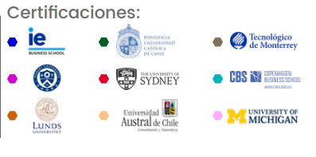

📚 Licenciatura Ejecutiva en Lengua y Literatura
Aplica EQ | Categoría: Ciencias Sociales
📖 ¿De qué trata esta Licenciatura?
Forma profesionales con dominio del análisis, producción y crítica de textos literarios, con habilidades para promover la cultura, generar contenidos editoriales y aplicar herramientas lingüísticas en contextos educativos, editoriales y digitales.
📌 Detalles del Programa
- ⏳ Duración: 4 años (12 cuatrimestres).
- 🛡️ Modalidad: 100% en línea.
- Plataforma: Blackboard disponible 24/7.
- Clases: 1 a 2 sesiones opcionales semanales (grabadas).
- Soporte: Asistencia Lince y tutoría continua.
- Recursos: Biblioteca virtual y Office incluido.
🌟 Razones para Estudiar en UVM
- Doble Titulación: Título nacional + opción de obtener Bachelor of Science in Management (NLU).
- Certificaciones Coursera: Cursos con validez laboral y académica internacional.
- Internacionalización: Viajes académicos, ponentes internacionales y experiencias globales.
- Alta empleabilidad: Hasta 80% mejora laboral (Ipsos/UVM 2020).
💼 Oportunidades Laborales
Los egresados podrán trabajar en:
- 📌 Docencia: Instituciones de nivel medio superior y superior, como profesores de lengua y literatura.
- 📌 Editoriales: Corrección de estilo, edición de textos, diseño de publicaciones impresas o digitales.
- 📌 Investigación: Instituciones públicas o privadas dedicadas a análisis lingüístico, literario o cultural.
- 📌 Crítica y creación: Producción de contenido literario, crítica especializada y redacción de artículos o libros.
- 📌 Comunicación digital: Generación de contenido educativo, e-learning, podcast o plataformas transmedia.
🎓 Certificaciones Internacionales
🎯 Tips para Vender la Licenciatura
- 💡 "Ideal si disfrutas leer, escribir, crear contenido o enseñar sobre lenguaje y literatura."
- 🔍 "Podrás desarrollarte como editor, crítico literario, guionista o docente especializado."
- 📌 "Esta carrera te abre puertas en el mundo editorial, educativo, literario y digital."
🛑 Objeciones Comunes y Respuestas
- ❓ "¿Solo sirve para ser maestro?"
✅ "No. Puedes trabajar también en medios, editoriales, proyectos culturales o desarrollo de contenido digital." - ❓ "¿Y si no tengo experiencia previa en literatura?"
✅ "No es necesario. Comenzarás desde los fundamentos hasta áreas aplicadas y profesionales." - ❓ "¿La modalidad en línea es confiable?"
✅ "Sí, UVM tiene plataforma robusta, clases grabadas, validez oficial y acompañamiento continuo."